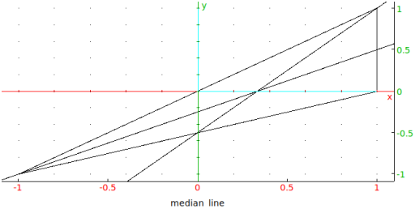
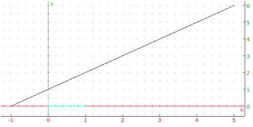

7.3.2 Global attributes
These attributes are shared by all objects of the same scene
title=
"titlename"
sets the title.
labels=[
"xname","yname","zname"
]
sets names of the
x
,
y
,
z
axes.
gl_x_axis_name=
"xname"
,
gl_y_axis_name=
"yname"
,
gl_z_axis_name=
"zname"
sets the names of the axes individually.
legend=[
"xunit","yunit","zunit"
]
sets units for the axes.
gl_x_axis_unit=
"xunit"
,
gl_y_axis_unit=
"yunit"
,
gl_z_axis_unit=
"zunit"
sets units for the axes individually.
axes=true
or
axes=false
shows or hides the axis.
gl_texture=
"filename"
sets the background image to
"filename"
.
gl_x=
xmin..xmax
,
gl_y=
ymin..ymax
,
gl_z=
zmin..zmax
sets the graphic configuration (do not use for interactive scenes)
gl_xtick=
xmark
,
gl_ytick=
ymark
,
gl_ztick=
zmark
sets the tick marks for the axes.
gl_shownames=true
or
gl_shownames=false
shows or hides objects names
gl_rotation=[
x
,
y
,
z
]
: defines the rotation axis for the animation rotation of 3-d scenes.
gl_quaternion=[
x
,
y
,
z
,
t
]
: defines the quaternion for the visualization in 3-d scenes (do not use for interactive scenes)
a few other OpenGL light configuration options are available but not described here.
Examples
Input:
title="median_line";triangle(-1-i,1,1+i);median_line(-1-i,1,1+i);median_line(1,-1-i,1+i);median_line(1+i,1,-1-i)
Output:

Input:
labels=["u","v"];plotfunc(u+1,u)
Output:
